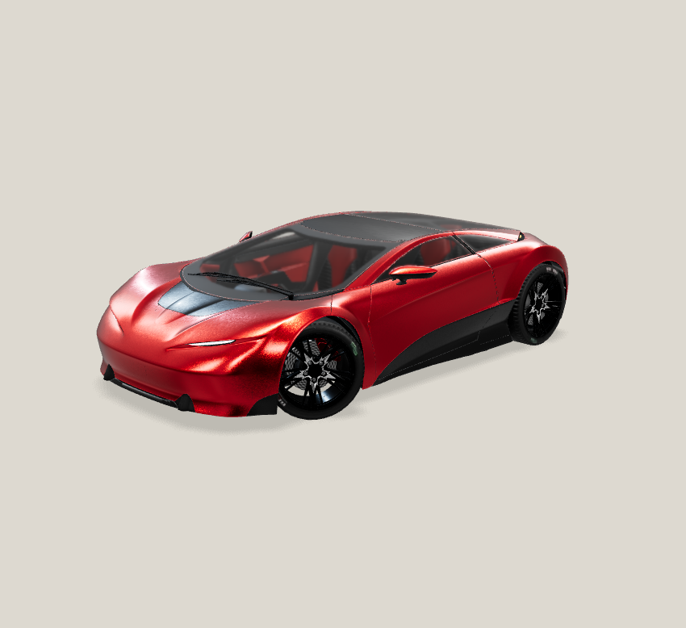
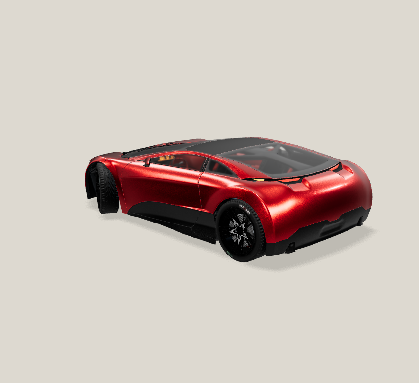

Carmine Candy / alloy · accepted Safe GLB · current refined lighting and precise-ground receiver. Private source review only; no AI generation or public run registration.
Both native PNGs: 850 × 778, DPR 1. Actual application renderer, camera-only presentation changes. CPU SwiftShader with disclosed 500 ms animation-frame pacing; framebuffer-only, not DOM screenshots. No resizing, cropping or retouching.

SHA-256a23adfe1d1ba992ce736f55ca6915f62f7b54d8afa96e9600a6181d8437c1c3b · same-frame telemetry
SHA-2566511901c87c30a79318e24c881ec5f1c000f2e374292223b97c57ad905157b15 · same-frame telemetryBoth actual PNGs visually inspected; full body and visible near-side tires uncropped, contact shadows retained. Far-side tires naturally occluded; not all four contacts can be inspected simultaneously. Existing wheel geometry, paint reflections and material appearance unchanged; not a realism certification.
Receiver Y = 0.1585579729696714. Same model transforms/materials, lights, floor, shadows and renderer telemetry across both sources. Accepted GLB SHA and 1,892 historical/source file hashes unchanged; app/public/dependency Git diff empty.
First front command hit a post-write JSON-comparison assertion (undefined/-0 serialization), not a capture failure. Its original PNG and synchronous telemetry were retained and verified without recapture. Original error log retained; rear readback passed after JSON-normalizing the assertion. Exactly two captures; no render retry.
Source manifest · Command records · Front readback recovery
Jay review and any publication authorization remain pending. Static review package, not interactive WebGL.